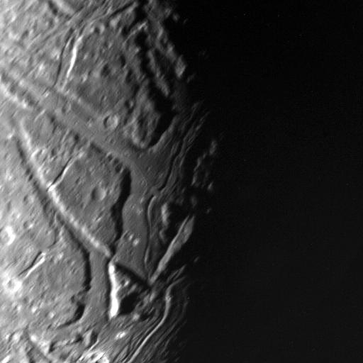

Ariel, seen by Voyager 2
Ariel is the fourth largest moon of Uranus.
It was discovered by William Lassel and is named after a character from a play by Alexander Pope.
It is a relatively dark moon made of rock and ice.
Apart from impact craters, Ariel has significantly more scarps and canyons like the 622 km long Kachina Chasmata.
Others have formed wide valleys and have rilles likely made by flowing liquid water.
Ariel has been visited only by the Voyager 2 mission.
Ariel is named after the sylph from Alexander Pope's The Rape of the Lock.
Originally, John Herschel intended the moons of Uranus to be given names of magical spirits from English literature.
Ariel orbits Uranus from a distance of around 190,900 km, making it the third major moon from Uranus.
It takes Ariel 2.5 Earth days to complete its orbit around Uranus.
The orbits is nearly circular with an eccentriciy of 0.001 and has an inclination of 0.2°.
Like all known round satellites, Ariel is tidally locked to Uranus.
Ariel might have been in a 3:5 resonance with Miranda at one point, which did not contribute as much to the latter's tidal heating as the resonance it had with Umbriel.
It might have also been in a 2:1 resonance with Umbriel and 4:1 with Titania.
Ariel is the fourth largest satellite of Uranus with a mean diameter of 1157.8 km.

Series of grabens at the terminator. Sprite Vallis (center) is crossed by a channel likely formed by liquid water flows that resurface, creating the smooth plains.
Ariel consists mostly of roughly equal amounts of water ice and silicate rock or heavier organic compounds.
It is likely differentiated into a rocky core and an icy mantle.
It is possible that a subsurface ocean exists under the crust that has to be the result from both tidal and radiogenic heating.
Ariel's surface appears to be one of the youngest of all the moons of Uranus, possibly even younger than Miranda.
It is also the brightest, even though it is still darkened by carbonaceous material.
The crystalline water ice is porous and transmits little solar heat to lower layers.
Apart from water ice, carbon dioxide and ammonia have also been detected on the surface.
Ariel has few large craters and many small ones, indicating that geological activity erased the large craters that would have been left otherwise.
The cratered region is concentrated around the south pole.
The two largest known craters are Yangoor and Domovoy.
Ariel's surface is transected by numerous fault valleys forming a second type of terrain.
The presence of ammonia suggests recent resurfacing within the grabens and creating smooth plains.
The canyons cut out polygonal plateaus known as horsts that are older than the plains.
The longest known canyon is the Kachina Chasma, over 620 km in length.
Apart from Kachina Chasma, a series of many other grabens crisscrossing the surface can be seen near the equator.
Some of these chasmata include Kewpie, Brownie, and Pixie, as well as valleys like Leprechaun and Sprite Valles.
These valleys are further crossed by trenches that could be some form of cryolava channels.
Because of the extreme axial tilt of Uranus, Ariel experiences great seasonal changes.
During the Voyager 2 flyby, only the southern hemisphere was luminated by the Sun, leaving the north undocumented.
Voyager 2 was the only spacecraft to visit Ariel in 1986.
It made a flyby with the closest approach at 127,000 km, making images at a relatively low spatial resolution.
The images have greatest spatial resolution than the larger three moons, but are not as detailed as those of Miranda.
A number of missions to Uranus have been proposed by ESA, NASA, and CNSA to revisit the Uranus system.